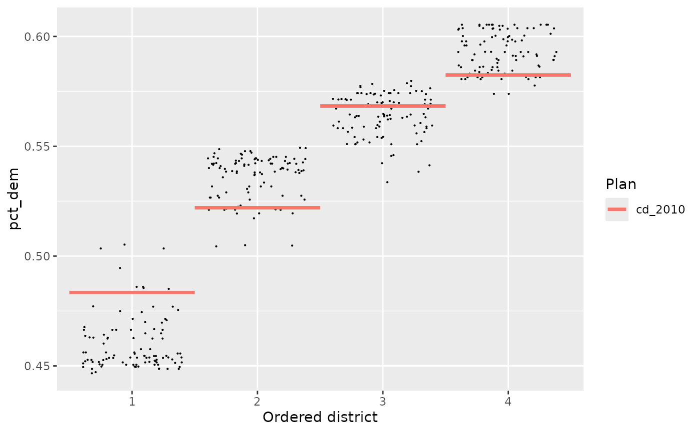
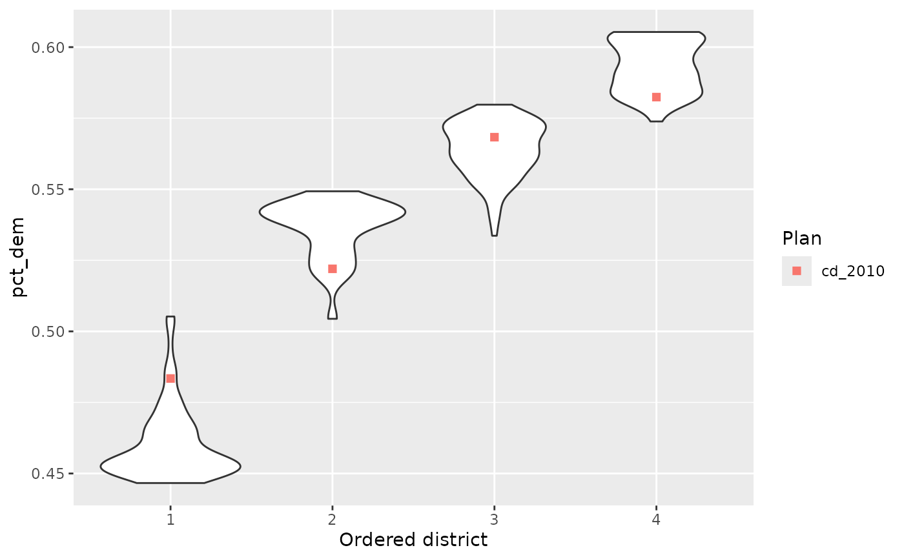
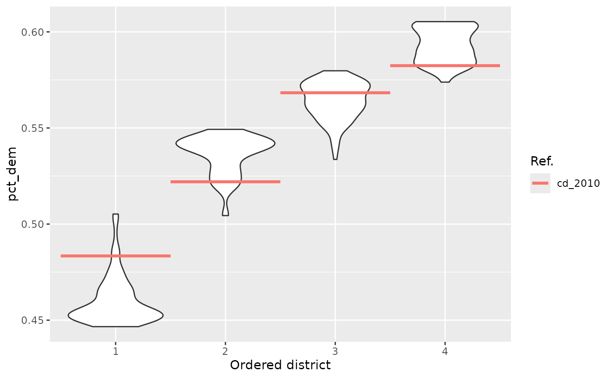

Plots a boxplot of a quantity of interest across districts, with districts optionally sorted by this quantity. Adds reference points for each reference plan, if applicable.
Usage
redist.plot.distr_qtys(
plans,
qty,
sort = "asc",
geom = "jitter",
color_thresh = NULL,
size = 0.1,
ref_geom,
ref_label,
...
)Arguments
- plans
the
redist_plansobject.- qty
<data-masking>the quantity of interest.- sort
set to
"asc"to sort districts in ascending order ofqty(the default),"desc"for descending order, orFALSEor"none"for no sorting.- geom
the
ggplot2geom to use in plotting the simulated districts: either"jitter"or"boxplot". Can also take in a function, so long as the function accepts....- color_thresh
if a number, the threshold to use in coloring the points. Plans with quantities of interest above the threshold will be colored differently than plans below the threshold.
- size
The dot size for
geom="jitter".- ref_geom
The reference plan geometry type.
"line"or"point"can be passed for reasonable defaults. Can also take in a function, so long as the function accepts....- ref_label
A human-readable name for the reference plan. By default the name in the
plancolumn is used. This can also take in a function which returns a call toggplot2::labs().- ...
passed on to
geom_boxplot
Using ggdist
For custom functions in geom, we can also create more complicated things like rainclouds
using the ggdist package. For example:
raincloud <- function(...) {
list(
ggdist::stat_slab(aes(thickness = ggplot2::after_stat(pdf*n)), scale = 0.7),
ggdist::stat_dotsinterval(side = "bottom", scale = 0.7,
slab_size = NA, quantiles = 200)
)
}These functions can be then passed to geom.
Examples
library(dplyr)
data(iowa)
iowa <- redist_map(iowa, existing_plan = cd_2010, pop_tol = 0.05, total_pop = pop)
plans <- redist_smc(iowa, nsims = 100, silent = TRUE)
plans <- plans %>% mutate(pct_dem = group_frac(iowa, dem_08, tot_08))
redist.plot.distr_qtys(plans, pct_dem)
#> Ignoring unknown labels:
#> • shape : "Plan"

# It also takes custom functions:
redist.plot.distr_qtys(plans, pct_dem, geom = ggplot2::geom_violin)
#> Ignoring unknown labels:
#> • shape : "Plan"

# With the raincloud example, if you have `ggdist`, you can run:
# redist.plot.distr_qtys(plans, pct_dem, geom = raincloud)
# The reference geom can also be changed via `reg_geom`
r_geom <- function(...) ggplot2::geom_segment(ggplot2::aes(as.integer(.data$.distr_no) - 0.5,
xend = as.integer(.data$.distr_no) + 0.5,
yend = pct_dem,
color = .data$draw),
linewidth = 1.2, ...)
# Finally, the `ref_label` argument can also be swapped for a function, like so:
redist.plot.distr_qtys(plans, pct_dem, geom = ggplot2::geom_violin, ref_geom = r_geom,
ref_label = function() ggplot2::labs(color = 'Ref.'))
